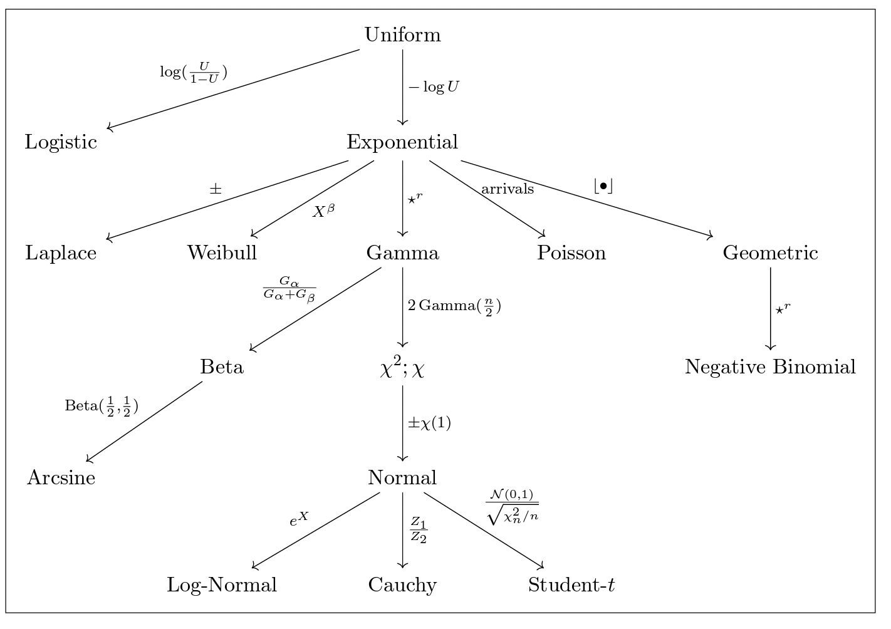

Section 2
Last Updated: 21 Sept 2023
Date: 22 Sept 2023
Introduction
In this section, we will discuss:
- Reasoning by Representation
- Derivation path of distribution representations
- Poisson Processes
Reasoning by Representation
Some of the important terms and definitons of Chapter 3 is as follow:
Bernoulli: A random variable \(Y\) has the Bernoulli distribution with parameter \(p\), denoted \(Y\sim Bern(p)\), if \(P(Y=1)=p\) and \(P(Y=0)=1-p\)
Binomial: sum of \(n\) iid Bernoulli random variables
Uniform: \(U = \sum_{i=1}^\infty \frac{B_i}{2^i} \sim\) Unif where \(B_i\) iid \(Bern(0.5)\).
PIT sampling: Let \(F\) be CDF with quantile function \(F^{-1}\), let \(U \sim Unif\) then \(F^{-1}(U) \sim F.\)
PIT pivoting: Let \(F\) be a continuous CDF, and \(Y \sim F\), then \(F(Y)\sim Unif.\)
Exponential: Let \(U\sim\) Unif. Then \(X = -\log U \sim \textnormal{Expo}.\)
Gamma: For a positive integer \(n\), \(G_n= X_1+X_2+\cdots + X_n \sim Gamma(n)\), where \(X_i \overset{i.i.d}{\sim}\) Expo.
Laplace : \(L \sim \textnormal{Laplace}\) if \(L \sim SX\) where \(S\) is random sign and \(X\sim Expo.\)
Weibull: \(W = X^\beta \sim\) Wei(\(\beta\)) where \(X \sim Expo\) and \(\beta >0.\)
Beta: \(B = \frac{G_a}{G_a+G_b} \sim Beta(a,b)\) where $ G_aGamma(a)$, \(G_b\sim Gamma(b)\) and \(G_a \perp\!\!\!\!\perp G_b\); note that \(U^{1/\alpha} \sim Beta(\alpha,1).\)
Beta-Gamma: Let \(G_a \sim Gamma(a) \perp\!\!\!\!\perp G_b\sim Gamma(b)\) , \(B = \frac{G_a}{G_a+G_b}\) and \(T = G_a + G_b \sim Gamma(a+b).\) Then \(T \perp\!\!\!\!\perp B.\)
Chi-squared: \(G \sim \chi_n^2\) if \(G\sim 2Gamma\left(\frac{n}{2}\right).\)
Normal: \(Z = SX \sim \mathcal{N}(0,1)\) where \(S\) is random sign and \(X\sim \chi_1.\)
Box-Muller: \(U_1,U_2 \overset{i.i.d}{\sim}\)Unif. Then \(\sqrt{-2\ln U_2}\cos{(2\pi U_1)}, \sqrt{-2\ln U_2}\sin{(2\pi U_1)} \overset{i.i.d}{\sim} \mathcal{N}(0,1)\)
Student \(t\)-distribution: $ T = t_n$ where \(Z \sim N(0,1) \perp\!\!\!\!\perp V_n \sim \chi_n^2.\)
Cauchy: \(C = \frac{Z_1}{Z_2} \sim \textnormal{Cauchy} \sim t_1\) where \(Z_1,Z_2 \sim_{i.i.d} \mathcal{N}(0,1)\).
For ease of referencing, Eric Zhang have summarized how to move from one distribution to next in a figure, in which we will discuss in the next section.
Derivation path of distribution representations:
Below is a pitcure showing derivation path of distribution representations, kindly created by Eric Zhang:

✏️ Pencil 3.3.2
Show that if \(U\sim Unif\), then \(1-U \sim Unif\). Also, show that \(2U-1 \sim SU\) for \(S\) a random sign independent of \(U\) (so \(2U-1\) is symmetric about 0, while \(U\) is symmetric about \(1/2\); see Section 3.10 for more information.)
Will release after section! :)
✏️ Pencil 3.4.12
Let \(Y_1\) and \(Y_2\) be r.v.s (possibly deifnied on different \(\Omega\)’s) with CDFs \(F_1\) and \(F_2\) respectively. A commonly used partial order on distributions (and thus on r.v.s), stochastic domination is defined by the relation \(Y_1 \preceq Y_2\) iff \(F_1(y) \geq F_2(y)\) for all \(y \in \mathbb{R}\).
Find an example of \(Y_1\) and \(Y_2\) on the same space with \(Y_1 \preceq Y_2\) but \(P(Y_1 > Y_2) \geq 0.95\)
Will release after section! :)
✏️ Pencil 3.5.10
Let \(W_1 \sim Wei(\beta_1), W_2 \sim Wei(\beta_2)\). Show that \((W_1|W_1 \geq 1) \preceq (W_2|W_2 \geq 1)\) iff \(\beta_1 \leq \beta_2\).
Will release after section! :)
✏️ Pencil 3.6.16
Let \(C \sim\) Cauchy and \(U \sim\) Unif. Show that \[tan(2 \pi U) \sim C\]
Will release after section! :)
✏️ Pencil 3.7.18
Show that if \(C\sim\) Cauchy, \(S\) is a random sign, and \(B\sim\) Beta(1/2, 1/2), then \[C+\frac{1}{C} \sim 2S\sqrt{1+C^2}\sim \frac{2S}{\sqrt{B}}\]
Will release after section! :)
✏️ Pencil 3.9.5
Show that NBin\((r,p)\) PMF is \(P(X=x)=\) \(r+x-1 \choose x\) \(p^r q^x\), where \(q\equiv 1-p\).
Will release after section! :)
✏️ Pencil 3.11.2
Suppose that \(Y_1, \cdots, Y_n \sim Expo\) are i.i.d. Show that the minimum is also Exponentially distributed, with \(n\) times the rate: \(Y_{(1)} \sim \frac{1}{n} Expo\) (the rate parameter is defined to be reciprocal of the scale parameter)
Will release after section! :)
Poisson Process
From Stat 110 textbook on pg 559:
Definition 1 A sequence of arrivals in continuous time is a Poisson process with rate \(\lambda\) if the following conditions hold:
The number of arrivals in an interval length \(t\) is distributed Pois\((\lambda t)\)
The numbers of arrivals in disjoint time intervals are independent.
Recall that in STAT 110, we also learn how to generate 1D Poisson Process, detailed in pg 560 of the textbook:
Theorem 1 (Generative Story for 1D Poisson process) To generate \(n\) arrivals from a Poisson process on \((0, \infty)\) with rate \(\lambda\):
Generate \(n\) i.i.d. Expo\((\lambda)\) r.v.s \(X_1, \cdots, X_n\)
For \(j=1, \cdots, n\), set \(T_j = X_1 + \cdots+X_j\)
Then we can take \(T_1, \cdots, T_n\) to be the arrival times.
Ref: Story 13.1.2 in STAT 110 textbook
Also note that on Theorem 13.2.1 in STAT 110 textbook:
Theorem 2 (Conditional Counts) Let \((N(t):t>0)\) be a Poisson process with rate \(\lambda\), and \(t_1<t_2\). The conditional distribution of \(N(t_1)\) given \(N(t_2) = n\) is \[N(t_1)|N(t_2)=n \sim Bin \left(n, \frac{t_1}{t_2}\right)\]
also note that Propositional 13.2.2 in STAT 110 textbook states that In a Poisson process of rate \(\lambda\), conditional on \(N(t) =1\), the first arrival time \(T_1\) has the Unif\((0,t)\) distribution.
Some other important concept about Poisson process from STAT 110 textbook include:
Theorem 3 (Conditional times) In a process process of rate\(\lambda\), conditional on \(N(t)=n\), the joint distribution of the arrival times \(T_1, \cdots, T_n\) is the same as the joint distribution of the order statistics of \(n\) i.i.d Unif\((0,t)\) r.v.s.
Also note that we know that the order statistics of Unif(0,1) r.v..s are Betas, so the conditional distributions of the \(T_j\) are scaled Betas. To get Beta Distribution, we can just divide the \(T_j\) by \(t\) so that their support is \((0,1)\): \[t^{-1}T_j | N(t) = n \sim Beta(j, n-j+1)\]
Theorem 4 (Generative Story for Poisson process) To generate \(n\) arrivals from a Poisson process on \((0, t]\) with rate \(\lambda\):
Generate the total number of events in the interval, \(N(t) \sim Pois(\lambda t)\)
Given \(N(t) = n\), generate \(n\) i.i.d Unif\((0,t)\) r.v.s \(U_1, \cdots, U_n\)
For \(j=1, \cdots, n\), set \(T_j = U_{(j)}\)
Ref: Story 13.2.4 in STAT 110 textbook
Theorem 5 (Superposition). Let \((N_1(t): t>0)\) and \((N_2(t): t>0)\) be independent Poisson process with rates \(\lambda_1\) and \(\lambda_2\) respectively. Then the combined process \(N(t) = N_1(t) + N_2(t)\) is a Poisson process with rate \(\lambda_1+\lambda_2\).
Theorem 6 (Generative Story for superposition) To generate the superposition of two independent Poisson processes, \((N_1(t): t>0)\) with rate\(\lambda_1\), and \((N_2(t): t>0)\) with rate \(\lambda_2\):
Generate arrivals from the Poisson process \((N_1(t): t>0)\)
Generate arrivals from the Poisson process \((N_2(t): t>0)\)
Superpose the results of steps 1 and 2.
Ref: Story 13.2.7 in STAT 110 textbook
There is also another generative story for superposition, as highlighted below:
Theorem 7 (Generative Story for superposition, take 2) To generate the superposition of two independent Poisson processes, with rate\(\lambda_1\) and \(\lambda_2\):
Generate i.i.d Expo\((\lambda_1 +\lambda_2)\) r.v.s \(X_1, X_2,\cdots\) and let the \(j\)th arrival at time \(T_j =X_1+\cdots+X_j\)
Generate i.i.d r.v.s. \(I_1, I_2, \cdots Bern(\lambda_1/(\lambda_1+\lambda_2))\), independent of \(X_1, X_2, \cdots\). Let the \(j\)th arrival be type-1 if \(I_j=1\), and type-2 otherwise.
Ref: Story 13.2.9 in STAT 110 textbook
Following up from the superposition definition and generative story above, the two most important theorem arive from this are
Theorem 8 (Projection of superposition into discrete time) Consider the superposition \((N(t);t>0)\) of two independent Poisson processes with rate \(\lambda_1\) and \(\lambda_2\). For \(j=1,2,\cdots\), let \(I_j\) be the indicator of the \(j\)th event being from the Poisson process with rate \(\lambda_1\). Then the \(I_j\) are i.i.d Bern\((\lambda_1/(\lambda_1+\lambda_2))\)
Ref: Thm 13.2.11 in STAT 110 textbook
Using the result above, we can orive wutg a story that a Gamma mixture of Poissons is Negative Binomial:
Theorem 9 (Exponential mixture of Poissons is Geometric). Suppose that \(X \sim Expo(\lambda)\), and \(Y|X=x \sim Pois(\lambda)\). Then \(Y\sim Geom(\lambda/(\lambda+1))\)
Ref: Thm 13.2.12 in STAT 110 textbook
Theorem 10 (Gamma mixture of Poissons is Negative Binomial). Suppose that \(X \sim Gamma(r, \lambda)\), and \(Y|X=x \sim Pois(x)\). Then \(Y\sim Nbin(r, \lambda/(\lambda+1))\)
Ref: Thm 13.2.12 in STAT 110 textbook
Section Discussion Questions
✏️ Section Problem 1
Let \(A, B, C\) be i.i.d. Uniform\((0,1)\), which are coefficients of the following ``random’’ quadratic equation: \[ A x^2 + 2B x + C = 0. \] What is the probability that the above equation has real root?
Will release after section! :)
✏️ Section Problem 2
Assume that \(U_1, \cdots, U_n \overset{i.i.d}{\sim}\) Unif, \(Z_1, \cdots, Z_{2n} \overset{i.i.d}{\sim} \mathcal{N}(0,1)\), and the \(U\)’s and \(Z\)’s are independent. Define \[ X = \frac{Z_1^2 + \cdots + Z_m^2}{ Z_1^2 + \cdots + Z_{2n}^2}, \] where \(m< 2n\). Find the distribution of \(Y = (U_1 U_2 \cdots U_n)^{-X}\).
Will release after section! :)
✏️ Section Problem 3
Let \(Z_1, Z_2 \overset{i.i.d}{\sim} \mathcal{N}(0,1)\). Furthermore, let \(X_1,X_2 \overset{i.i.d}{\sim} \chi_1^2\). Show that \[ Z_1Z_2\sim \frac{1}{2} (X_1 - X_2). \]
Will release after section! :)
✏️ Section Problem 4
Let \(X_1, X_2 \overset{i.i.d}{\sim} Expo\). Show that \(X_1 - X_2 \sim \operatorname{Laplace}\).
Let \(Z_1,Z_2,Z_3,Z_4 \overset{i.i.d}{\sim} \mathcal{N}(0,1)\), and \(L \sim\) Laplace. Show that \[ Z_1 Z_2 - Z_3 Z_4 \sim L. \]
Will release after section! :)
✏️ Section Problem 5
Let \(Y\) have a Cauchy distribution centered at \(\theta\), i.e. the density of \(Y\) is \[f(y|\theta) = \frac{1}{\pi} \frac{1}{1+(y-\theta)^2} ,\hspace{0.2cm} y \in \mathbb{R} \] Suppose that \(\theta\) has a Cauchy distribution (centered at \(0\)). Find the marginal distribution of \(Y\).
Will release after section! :)
✏️ Section Problem 6
The people of Lineland live on the unit interval \([0,1]\). They love coffee. Currently, they have 2 Starbucks stores, at the points 0 and 1. Starbucks decides to open new stores in Lineland, according to a Poisson process of rate \(\lambda\) on the interval \([0,1]\). Let \(N\) be the number of new Starbucks stores in Lineland (i.e., not including the existing stores at the points 0 and 1 ). Let \(W\) be the furthest distance that a Lineland citizen could ever have to walk to get to the nearest Starbucks, after the new stores have opened. Find \(E(W \mid N=n)\), where \(n\) is a positive integer. Simplify fully, expressing your answer in terms of a harmonic number \(H_m\) for some \(m\), where \[ H_m=\sum_{k=1}^m \frac{1}{k} . \]
Will release after section! :)
✏️ Section Problem 7
Consider the following simple model for the growth of a population of bacteria. Any individual bacterium splits into two bacteria at some random time, independently. It takes an Exponential amount of time for any specific bacterium to split (measured from the time of birth of that bacterium, and choosing the units in which time is measured so that the Expo has mean 1). So each individual bacterium has its own Expo waiting time until it splits, and these Expo r.v.s are i.i.d.
At time 0 , there is one bacterium. Let \(T_n\) be the time (on a timeline) of the \(n\)th splitting occurrence. So \(T_1<T_2<\ldots\), with \(T_1\) the time at which the bacterium that was present at time 0 splits, \(T_2\) the time of the next splitting occurrence, etc.
Find the CDF of \(T_n\).
Find the distribution of the number of bacteria present at time \(t\), for any \(t>0\).
Will release after section! :)
✏️ Section Problem 8
In a certain town, each married couple has a Poisson \((\lambda)\) number of children, with \(\lambda\) unknown. An anthropologist picks a sample of couples and observes \(Y_1, \ldots, Y_n\), where \(Y_j\) is the number of children of the \(j\) th couple and it is assumed that \(Y_j \sim \operatorname{Pois}(\lambda)\) independently. The anthropologist wishes to estimate the probability of a couple being childless, i.e., \(p_0 \equiv P\left(Y_j=0\right)\). Let \(\bar{Y}\) be the sample mean of \(Y_1, \ldots, Y_n\).
Find \(E\left(Y_1 \mid \bar{Y}\right)\) and the conditional distribution of \(Y_1\) given \(\bar{Y}\).
The anthropologist proposes estimating \(p_0\) using the proportion of couples that are childless, i.e., the number of childless couples divided by \(n\). Call this estimator \(T\). It will be shown later in Stat \(210 / 211\) that a better estimator can be obtained by conditioning on \(\bar{Y}\). Find a simple expression for \(E(T \mid \bar{Y})\) (this new estimator should be computable without knowing \(\lambda\) ).
Will release after section! :)
Next Week
Next week, we will discuss:
- On Order Statistics
- Meaning on Mean
Feel free to upload the pencil problem you wish to be discussed next week here.
Note that a verified email address is needed in the GForm so we don’t get scammy input! :)
\(\,\)